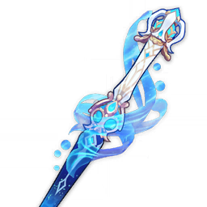
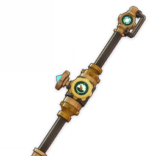

Furina

Armas

Espada de Favonius

Llave de la Coronación

Fulgor de las Aguas Calmas

Vado del Río Ceniciento

Colmillo Lupino
Talentos

Los básicos se pueden dejar sin subir.
Artefactos


Estadísticas
Principales
Reloj
Recarga/Vida
Cáliz
Bono hydro/Vida
Corona
Prob/Daño crítico
Secundarias
Recarga de energía > Prob. crítico = Daño crítico > Vida
Total de estadísticas en reposo (sin buffs de equipo)
- 80 - 100 de prob.
- 190-250%+ de recarga, depende del equipo
- El máximo de vida y daño crítico que se pueda
Compañeros de equipo
Soporte general
Furina puede ir con cualquier personaje que aproveche el bono de
daño, el único requisito es que haya un healer en el equipo.